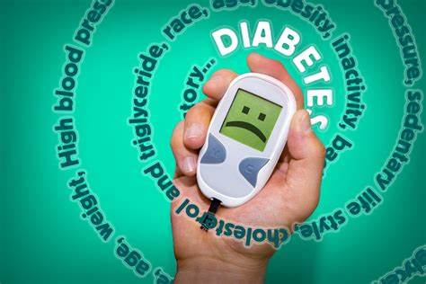
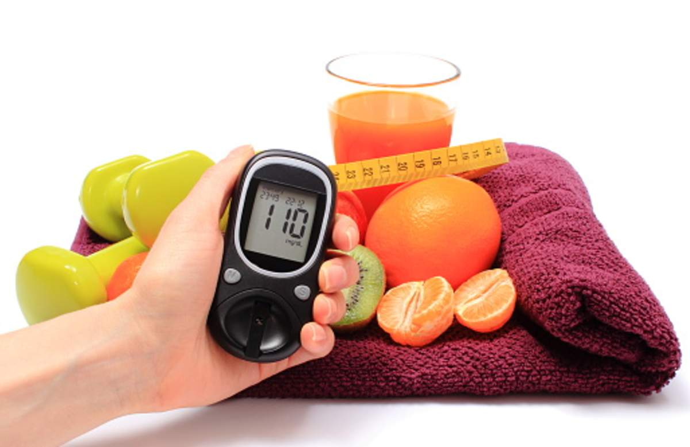

Tips to avoid diabetes
Cut sugar and refined carbohydrates from your diet :
Eating foods high in refined carbohydrates and sugar increases blood sugar and insulin levels, which may lead to diabetes over time. Examples of refined carbohydrates include white bread, potatoes and many breakfast cereals. Instead, limit sugar and choose complex carbohydrates such as vegetables, oatmeal and whole grains.
Quit smoking
If you are a current tobacco user. Smoking can contribute to insulin resistance, which can lead to type 2 diabetes. Quitting has been shown to reduce this risk of type 2 diabetes over time.
Watch your portions:
Avoiding large portion sizes can help reduce insulin and blood sugar levels and decrease the risk of diabetes. Eating too much food at one time has been shown to cause higher blood sugar and insulin levels in people at risk of diabetes.
Aim for 30 :
Try to be intentionally active by taking a walk, dancing, lifting weights or swimming for 30 minutes, five days per week. If you get no or very little physical activity—and you sit during most of your day—then you lead a sedentary lifestyle, and it's time to get moving.
Drink water :
Drinking water instead of other beverages may help control blood sugar and insulin levels, thereby reducing the risk of diabetes. Sticking with water most of the time helps you avoid beverages that are high in sugar, preservatives and other unneeded ingredients.
Eat fiber :
Getting plenty of fiber is beneficial for gut health and weight management. Consuming a good fiber source at each meal can help prevent spikes in blood sugar and insulin levels, which may help reduce your risk of developing diabetes

Choose Carbs Carefully :
Diabetes doesn't mean you have to cut carbs completely. Choose carbohydrates that break down in the body slowly, providing steady energy. Reach for whole grains, beans, nuts, and fresh vegetables and fruits. Yes, you can eat fruit even though it's sweet. It's about eating the right amounts of carbohydrates at each meal. A registered dietitian can help you learn how much is right for you.
Get Enough Sleep :
Getting too much or too little sleep can increase your appetite and cravings for high-carb foods. That can lead to weight gain, increasing your risk for complications such as heart disease. So shoot for seven or eight hours of sleep a night. If you have sleep apnea, treating it can improve your sleep and lower your blood sugar levels.
Monitor your Blood sugar Daily :
You know you're supposed to check it. And actually checking your blood glucose levels can help you avoid diabetes complications, like nerve pain, or keep them from getting worse. Checking it can also help you see how foods and activities affect you, and if your treatment plan is working. Your doctor can help you set a target glucose level range. The closer you get to your target, the better you'll feel.
Manage Stress :
When you have diabetes, stress can cause your blood glucose levels to rise. Get rid of whatever physical or mental stresses you can. Learn coping techniques to deal with others. Relaxation techniques such as breathing exercises, yoga, and meditation may be especially effective if you have type 2 diabetes.
Optimse the vitamin D levels :
Consuming a good fiber source at each meal can help prevent spikes in blood sugar and insulin levels, which may help reduce your risk of developing diabetes. Solar energy is a great source of vitamin D. Exposing oneself at dusk and dawn can help a great deal.